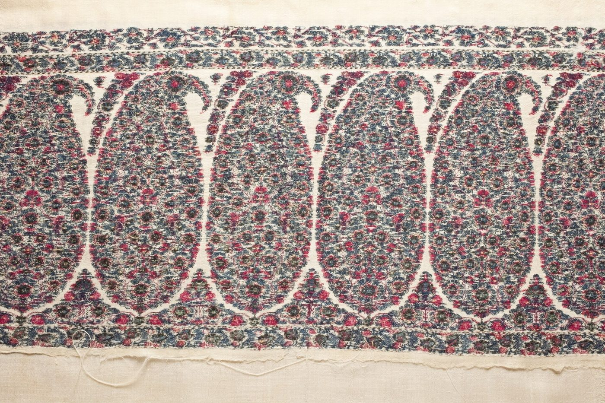

Chapter 12: Deśa: A Regional Survey of Living Crafts¶
Every region of India has its own crafts, shaped by local materials, by the needs and tastes of local patrons and markets, by the communities who practise them, and by long histories of contact. This chapter offers a brief regional survey of some of the best-known living traditions, complementing the material-based chapters that precede it. Table 12.1, at the end of the chapter, lists the principal crafts of each region with the chapters in which they are described, and can be used as a finding aid. It cannot be complete; a much fuller guide is the regional encyclopaedia edited by M. P. and Aditi Ranjan (Ranjan and Ranjan 2007). Ādivāsī and folk traditions are treated more fully in Volume 23. A final section looks briefly beyond India’s present borders, to Sri Lanka, Nepal, Bangladesh and Pakistan.
12.1 The North and North-West¶
12.1.1 Kashmir: Shawls and Papier-Mâché¶
The Kashmir shawl is woven from pashm, the soft under-fleece of the Changthangi goat of Ladakh and the Tibetan plateau, collected by Changpa herders and traded to Srinagar. The fibre is very fine, about 12–16 microns in diameter, and must be cleaned and spun by hand; spinning was traditionally done by women at home, weaving by men in workshops. The most elaborate shawls were woven in the twill-tapestry technique known as kānī, in which the weft is wound on many small wooden bobbins (kānī) and interlocked around groups of warp threads, following a coded pattern-script, the tālīm, which the master reads aloud to the weavers (Figure 12.1). Embroidered shawls (amlīkār, sozanī) imitated the woven ones more cheaply.
Kashmir shawls were luxury goods at the Mughal court and in Iran and Central Asia, and from the late eighteenth century became a fashion in Europe, especially France. European imitations, woven on Jacquard looms in Lyon, Paisley and elsewhere, followed. The Kashmir industry collapsed in the 1870s, when the Franco-Prussian War and changing fashion destroyed the French market, and famine struck the valley (Irwin 1973; Ames 1986). Kānī weaving survives on a small scale in and around Kanihama, and Kashmir pashmina and the Kānī shawl are registered Geographical Indications.

.jpg){kind=link}
Shāhtūsh, an even finer wool from the Tibetan antelope (chiru), was the material of the shawl that “could pass through a ring”. Because the antelope must be killed to obtain it, trade in shāhtūsh is banned under CITES and Indian law.
Kashmiri craftsmen also make felted woollen rugs (namdā), embroidered with chain-stitch, and gabbā, rugs made of old woollen blankets dyed, cut and stitched together in appliqué and embroidered. Its carpets, introduced from Persia and Central Asia, are described in Chapter 4; three other crafts, papier-mâché, walnut carving and khatambandh ceilings, are described here.
Kashmiri papier-mâché (kār-i qalamdānī, “pen-box work”, Chapter 11) divides the work between two specialists. The sākhtsāz makes the object: paper pulp is pressed onto a mould, or layers of paper are pasted over it, and the dried shell is cut from the mould, joined and smoothed. The naqqāsh then grounds it with chalk and glue, burnishes it and paints it in watercolour and gold or silver leaf with flowers, birds, hunting scenes or the dense all-over floral pattern called gul-i hazāra (“a thousand flowers”), finally sealing the surface with varnish. The craft made pen-boxes, caskets and trays for courtly buyers, and from the nineteenth century vases, boxes and ornaments for European ones. The carvers of walnut wood (Juglans regia) work in several depths, from deep, undercut carving of chinar leaves, lotuses and vines to shallow relief, lattice and plain polished work. The khatambandh ceilings are assembled from small, thin panels of pine or deodar fitted together in geometric patterns.
Kashmir is also unusual in that its embroidery for the market has been largely men’s work. The fine needlework (sozanī) on pashmina shawls, the chain-stitch worked with a hook (ārī) on woollen rugs and furnishing fabrics, and crewel-work in wool on cotton are done mainly by men, in workshops and at home, while women’s part in the shawl economy was concentrated in spinning. The contrast with the household embroideries of Punjab, Bengal and Kutch (Chapter 4) suggests that the division of craft work between men and women was a matter of local custom and market organisation, not of the nature of the work.
12.1.2 Ladakh and the Buddhist Himalaya¶
In Ladakh, Lahaul, Spiti and Sikkim, crafts were shaped by Tibetan Buddhism and by the trade routes across the Himalaya. Monasteries commissioned painted scrolls (thangka), wall paintings, clay and metal images, carved and painted wood, and ritual objects, often made by itinerant craftsmen from Tibet and Nepal as well as by local families. The coppersmiths of Chilling in Ladakh, who make tea-pots, ladles and ritual vessels of copper and brass, are said to descend from Newar craftsmen from Nepal. Women weave woollen cloth and make felt and carpets, and the pashmina trade linked the herders of the Changthang with the weavers of Kashmir.
12.1.3 Punjab and Himachal¶
The phulkārī and bāgh embroideries of Punjab are described in Chapter 4. The rumāls of Chamba in Himachal Pradesh are square covers embroidered in double-satin stitch, so that the image is the same on both sides, on designs drawn by the painters of the Pahāṛī courts, showing scenes of Kṛṣṇa, weddings and hunts. Kullu shawls, woven on handlooms with geometric borders, are another important craft of the hills.
Phulkārī was embroidered by the women of Hindu, Sikh and Muslim households across undivided Punjab, especially in the families of Jaṭ cultivators, and the same patterns crossed religious lines; it was the textile of the family and the village rather than of any one faith. The court of Ranjit Singh (r. 1799–1839) at Lahore was the last great indigenous patron of crafts in the north-west. It commissioned arms, jewellery, shawls and tents of Kashmir cloth, and under Ranjit Singh the Harmandir Sahib at Amritsar was covered with gilded copper and inlaid marble, work that drew metalworkers, gilders and stone-inlayers to the city. Kashmir itself came under Sikh rule in 1819 and under the Dogra rulers of Jammu in 1846. Heavy taxation of the shawl trade and the famines of the period drove many Kashmiri weavers to the towns of Punjab, among them Amritsar, Ludhiana and Nurpur, where they wove shawls for the Indian and European markets until the trade collapsed in the 1870s (Ames 1986).
12.1.4 Uttar Pradesh¶
Uttar Pradesh is one of the most important craft regions of India: the silk weaving of Banaras (Chapter 4); chikan embroidery and zardozī metal-thread embroidery of Lucknow; the brassware of Moradabad; the glass of Firozabad; the carpets of Bhadohi and Mirzapur, an industry that grew in the nineteenth century; the black pottery of Nizamabad; the perfumes of Kannauj; and the printed cottons of Farrukhabad and Pilkhuwa. Much of this work is done by Muslim artisans, a fact reflected in the Persian vocabulary of many crafts.
12.2 The West¶
12.2.1 Gujarat and Kutch¶
Gujarat has been a centre of textile production and export for more than a thousand years: the printed cottons found in Egypt were mostly made there (Chapter 5), and its ports exported paṭolā and printed cloth to Southeast Asia. Today its crafts include the double-ikat paṭolā of Patan, the bāndhaṇī of Jamnagar and Bhuj, the ajrakh of Ajrakhpur and Dhamadka, the mashrū of Patan and Mandvi, the carved woodwork of the old towns, and the bead-work of Saurashtra.
Kutch, in particular, is home to many communities with distinctive embroidery: the Rabārīs, whose women embroider in chain stitch with small mirrors; the Ahīrs; the Mutvās; the Sodhā Rajputs and Meghvāls, who practise the counted-thread sūf work, in triangular satin stitches worked from the back of the cloth; and many others. Judy Frater’s study of Rabārī embroidery shows how these styles express identity, and how they change (Frater 1995). In the 1990s some Rabārī communities decided to restrict the elaborate embroidered dowries that had become a heavy burden on families; women responded with new, quicker styles using ready-made trims.
In Kutch, too, the weavers of Bhujodi and neighbouring villages, of the Vaṇkar community, weave woollen shawls and blankets from the wool of local sheep and camel-hair for the pastoral communities of the region, and have adapted their designs for urban buyers. In Saurashtra, women of the Kāṭhī and other communities made elaborate glass-bead work: door-hangings (toraṇ), coverings for the bride’s bullock-cart, and ornaments, in which thousands of small glass beads are strung into figurative and geometric designs.
Rogan painting is done on cloth with a thick paste made by boiling castor oil and mixing it with pigments, which is drawn out with a metal stylus. Once made in several places in Kutch and Sindh, by the late twentieth century it survived only in a single family of the Khatrī community at Nirona. It has been revived by that family, led by Abdul Gafur Khatri, who received the Padma Shri in 2019, and is now taught to younger members of the community, including women.
12.2.2 Rajasthan¶
Rajasthan’s crafts include block printing at Sanganer, Bagru and Barmer; tie-dye; blue pottery and lac bangles at Jaipur; thewā at Pratapgarh; koftgarī; the terracotta plaques of Molela (Chapter 6); and the painted scrolls (paṛ) used by the Bhopā priest-singers who perform the epics of the folk heroes Pābūjī and Devnārāyaṇ, made by the Joshī painters of Shahpura and Bhilwara. Jaipur, a planned city founded in 1727, became a great centre of crafts under its rulers, and was designated a UNESCO Creative City of Crafts and Folk Art in 2015.
Western Rajasthan has its own textile crafts: appliqué and patchwork made by women of Barmer and Jaisalmer, block-printed and resist-dyed cottons (including ajrakh) at Barmer and Balotra, and woollen weaving by the Meghvāl community. Jaipur is also one of the world’s great centres for the cutting and polishing of coloured gemstones, and for silver jewellery, enamel and kundan work (Chapter 10).
12.2.3 Maharashtra¶
Maharashtra’s crafts include the paiṭhaṇī silk saris of Paithan and Yeola; the leather sandals of Kolhapur, made by the Chāmbhār and Dhor leather-working communities; the lacquered toys and gañjīfā cards of Sawantwadi; and the wall paintings of the Warli, an Ādivāsī community of the Thane and Palghar districts. Warli paintings, white figures on a mud wall, were made for marriages and rituals; from the 1970s, encouraged by the craft boards and by the artist Jivya Soma Mashe (1934–2018), they were made on paper and cloth for sale and became widely known.
12.3 The East¶
12.3.1 Bihar: Mithilā Painting¶
In the Mithilā region of north Bihar and southern Nepal, women painted the walls of houses, especially the marriage chamber (kohbar), with images of deities, auspicious symbols and the lotus pond. The British official W. G. Archer saw these paintings on the walls of houses damaged in the earthquake of 1934 and later wrote about them. During the drought of the mid-1960s, the All India Handicrafts Board encouraged women in the villages around Madhubani to paint on paper for sale, and Mithilā (Madhubani) painting became one of the best-known Indian folk arts. Distinct styles developed in different communities: the brightly coloured bharnī style associated with Brahmin women, the line-drawing kachnī style of Kāyastha women, and the godnā (tattoo) style developed by Dalit women of the Dusādh and Chamār communities. Among the artists who have received national recognition are Sita Devi, Ganga Devi, Mahasundari Devi and Dulari Devi, the last from the Mallāh (fishing) community. Madhubani painting is a registered Geographical Indication.
12.3.2 Bihar and Jharkhand: Other Traditions¶
Bihar also has the sujanī, quilted and embroidered covers made by women from layers of old cloth, in which women of Bhusura and other villages, organised in collectives since the late twentieth century, now embroider narratives of their own lives, of social issues and of local events alongside traditional motifs. In the Hazaribagh region of Jharkhand, women of several Ādivāsī and other communities paint the walls of their houses with sohrāy paintings at the harvest festival and with khovar paintings, scratched through layers of coloured earth, for marriages; these too have been transferred to paper and cloth for sale. Tasar silk weaving is important around Bhagalpur in Bihar and in Jharkhand, using silk reared by forest communities (Chapter 4).
12.3.3 Odisha¶
Pipli, near Puri, is known for appliqué: cut shapes of brightly coloured cloth, often animals, birds, flowers and deities, sewn onto a ground to make canopies, umbrellas and hangings used in the processions of the Jagannātha temple, and now lampshades, bags and wall-hangings for the market. The paṭṭacitra painters (Citrakāra) of Raghurajpur and other villages near Puri paint cloth prepared with chalk and gum with images of Jagannātha and of episodes from the epics and the Kṛṣṇa legend, in bright mineral and vegetable colours; they also make painted palm-leaf books with incised drawings, and paint the images of Jagannātha, Balabhadra and Subhadrā for the temple. Odisha’s other crafts include the ikats of Sambalpur and Nuapatna, the silver filigree of Cuttack, stone carving, and Dhokra casting.
12.3.4 Bengal¶
Bengal’s crafts include the kānthā (Chapter 4); the terracotta temples and votive horses of Bankura (Chapter 6); the bālucharī silk saris of Bishnupur; the Dhokra casting of Bikna and Dariyapur; the painted scrolls (paṭ) of the Paṭuās (Chapter 11); the conch-shell work of Bishnupur; and, historically, the ivory carving of Murshidabad (Chapter 7).
12.4 The South¶
Tamil Nadu is known for the silk of Kāñcīpuram, the bronzes of Swamimalai, the stone carving of Mamallapuram, the painted glass and gilded Thanjavur paintings (panel paintings with raised gesso, gold foil and inset glass stones, developed under the Maratha rulers of Thanjavur in the eighteenth and nineteenth centuries), the Aiyaṉār horses, and the houses of Chettinad, built by the Nāṭṭukkōṭṭai Cheṭṭiyār merchant community with Burmese teak, Italian marble and locally made cement tiles. Kerala has the mirrors of Āṟanmuḷa, bell metal, coir (coconut fibre) products and its carpentry traditions. Karnataka has the counted-thread embroidery called kasūti, worked by women of the Dharwad region in geometric and temple-like motifs on saris; the lacquered toys of Kinnal; the silks of Mysore and Ilkal, sandalwood carving, Bidrī ware, the Lambāṇī embroidery of Sandur and the toys of Channapatna. Andhra Pradesh and Telangana have kalamkārī, the ikats of Pochampally, the toys of Kondapalli, Etikoppaka and Nirmal, the silver filigree of Karimnagar and the leather shadow puppets (tolu bommalāṭa), and the painted narrative scrolls of Cheriyal (Chapter 11). In Thanjavur, metalworkers make “art plates” of brass with appliqué figures of deities in silver and copper, and Kumbakonam and Swamimalai are centres of bronze-casting (Chapter 3).
Kerala’s temple murals, painted in a distinctive palette of red and yellow ochre, green and black on the walls of temples and palaces from about the sixteenth century, such as those of the Mattancherry palace at Kochi, were revived in the twentieth century through training at the Guruvayur temple’s mural institute. In Tamil Nadu and Karnataka, women draw kōlam and raṅgōli designs of rice flour on thresholds every morning, an ephemeral art that combines devotional, aesthetic and geometric traditions and is passed from mother to daughter.
12.5 The North-East¶
The North-East is a region of great craft diversity, with traditions shaped by its many peoples and by its forests of bamboo and cane.
In Assam the silks described in Chapter 4, golden mugā, warm erī and white pāṭ, are woven in homes and in the weaving town of Sualkuchi into the mekhelā-chādar worn by Assamese women; bell metal is worked at Sarthebari, bamboo and cane everywhere, and masks are made in the Vaiṣṇava monasteries of Majuli (Chapter 11). In Nagaland each Naga people has its own textile designs, woven on the back-strap loom by women. Shawls marked status, and some designs were reserved for men who had given feasts of merit or achieved distinction in war; the Ao warrior’s shawl, with a central white band painted with animals and other figures, is a well-known example. Manipur has fine cotton and silk weaving, including the phanek wrap-skirt, the Longpi stone-and-clay pottery of the Tangkhul Nagas (Chapter 6), and water-reed (kauna) basketry and mats (Chapter 8).
Meghalaya, Mizoram and Tripura are known for cane and bamboo work, for Khasi and Garo basketry and the weaving of erī silk, for the Mizo puan, a wrap-around cloth woven by women on the back-strap loom whose designs mark occasions and status, and for the Tripuri riśā, a narrow woven band worn by women as a breast-cloth or headdress and given at a girl’s coming of age, together with the wrap-skirt (rignāi). In Arunachal Pradesh the Apatani, Adi, Mishmi and other peoples weave cotton and other fibres on back-strap looms in designs that mark community identity. In the Buddhist areas of Arunachal and Sikkim, craftsmen make wooden masks and bowls, woollen carpets, painted scrolls (thangka) and wood carving in the Tibetan tradition, and the Monpa make paper from the bark of a shrub (Chapter 11).
Besides its looms and silks, two Assamese traditions deserve notice here. The Vaiṣṇava monasteries (satras) of the tradition founded by Śaṅkaradeva (by tradition 1449–1568) were, and on Majuli still are, centres of craft as well as of devotion. Monks and lay devotees made the masks, costumes and properties for the plays (Chapter 11). The satras also produced manuscripts on sāñcipāt, the inner bark of the agaru tree (Aquilaria), which was cut into strips, dried, rubbed smooth and coated before it was written and painted on. The illustrated manuscripts of the Bhāgavata and other works in a distinctive Assamese style are their finest products, together with the Hastividyārṇava, a treatise on elephants painted for the Ahom court in 1734 (Volume 20). In lower Assam, the bell-metal smiths of Sarthebari cast and beat plates, bowls and the footed offering tray (xorāi) that serves as an emblem of Assamese hospitality, presented with betel to honoured guests.
12.6 Central India¶
Madhya Pradesh and Chhattisgarh are rich in Ādivāsī crafts. The Dhokra casters of Bastar, around Kondagaon, make brass figures of deities, animals and people by the lost-wax method with wax threads (Chapter 3). Wrought-iron figures and lamps are made by Bastar smiths. The Gond and Pardhān Gond communities painted their walls and floors with patterns and figures for festivals; in the early 1980s the young Pardhān artist Jangarh Singh Shyam (c. 1962–2001) was brought by the artist J. Swaminathan to the newly founded Bharat Bhavan arts centre in Bhopal, and his paintings, with their dense patterning of animals, trees and spirits, launched a school of “Gond art” that now includes many artists. The Pithorā paintings of the Rāṭhvā and Bhilālā communities of eastern Gujarat and western Madhya Pradesh are painted on house walls in fulfilment of vows to the god Pithorā, with processions of horses, riders and other figures, under the direction of the ritual specialist (baḍvā).
The weaving towns of Chanderi and Maheshwar make light saris and fabrics in silk and cotton; Chanderi’s fine fabrics with gold-thread motifs were known in the Mughal period, and Maheshwar’s weaving was revived in the eighteenth century under Ahilyābāī Holkar and again in the twentieth century. Bagh prints are described in Chapter 5.
12.7 Beyond the Present Borders¶
The modern frontiers of India cut across older craft regions. The weavers of Dhaka, the printers of Sindh and the tile-makers of Multan belonged to the same networks of materials, markets and techniques as their neighbours in present-day India, and Sri Lanka and Nepal developed traditions closely related to those of the subcontinent. This section notes some of them briefly; it is not a survey.
12.7.1 Sri Lanka¶
The classic study of Sri Lankan crafts is Ananda Coomaraswamy’s Mediaeval Sinhalese Art (1908), written after his years as director of the Mineralogical Survey of Ceylon (Coomaraswamy 1908). It describes the crafts of the Kandyan kingdom, which lasted until 1815, mainly as they survived in the eighteenth century. The royal craftsmen worked in workshops attached to the court and held land in return for service to the king (rājakāriya). Most of them belonged to the artisan caste of the Navandanna, which included smiths, carpenters, painters and other craftsmen; groups of lower rank wove mats, made pots or worked as drummers. Among the latter were the Kinnara of the Dumbara valley near Kandy, whose mats are woven with geometric and animal designs in dyed fibre. Coomaraswamy’s picture of craftsmen maintained by king and temple and sheltered from the market became the basis of his idealised account of the traditional craftsman (Chapter 14). Other Sri Lankan crafts include lacquer applied to turned wood and laid on in coloured threads, brass and silver work, and the carved and painted masks of Ambalangoda on the south-west coast. These are made for the kōlam folk drama and for the sanni healing rituals, in which dancers impersonate the demons held to cause disease.
12.7.2 Nepal¶
In the Kathmandu valley, crafts were the hereditary work of Newar castes, both Buddhist and Hindu. Buddhist Śākya families of Patan cast and embossed images and ritual objects in copper and brass, and the Tāmrakār were coppersmiths. The Citrakār painted images, masks and the cloth paintings called paubhā. Carpenters and carvers (Śilpakār) made the carved struts, doorways and latticed windows of temples, monasteries and houses, and the Prajāpati potters of Bhaktapur and Thimi still dry their pots in the open squares of their quarters (Slusser 1982). Newar craftsmen worked far beyond the valley. In 1260 the young Newar Anige (Araniko, 1245–1306) led a team of craftsmen to Tibet to build a golden stūpa for the Sakya hierarch Phagpa. He went on to the court of Khubilai Khan, where he directed imperial workshops and designed the White Stūpa of the Miaoying temple in Beijing, completed in 1279. For centuries afterwards Newar metalworkers and painters worked in Lhasa and in Tibetan monasteries. In the hills, papermakers make a tough paper called lokta from the inner bark of Daphne shrubs, a material related to that of the Monpa paper of Arunachal Pradesh (Chapter 11). The metal techniques of the Newars are discussed in Volume 14 and their painting in Volume 16.
12.7.3 Bangladesh¶
Bangladesh shares with West Bengal the traditions of jāmdānī, kānthā (Chapter 4), conch-shell work (Chapter 10) and terracotta temple decoration, of which the Kantajew temple at Kantanagar near Dinajpur, completed in the mid-eighteenth century, is among the richest examples. Two further crafts have received international recognition. The śītalpāṭi (“cool mats”) of Sylhet are woven from thin strips split from the stems of the murtā plant (Schumannianthus dichotomus); UNESCO inscribed their weaving on its list of intangible heritage in 2017. The painting of cycle-rickshaws in Dhaka, whose backboards, hoods and frames carry film stars, landscapes, animals and political images, is a twentieth-century urban craft practised by specialist painters and inscribed by UNESCO in 2023.
12.7.4 Pakistan¶
In Sindh, besides the ajrakh (Sindhi ajrak; Chapter 5), women make rallī quilts, pieced and appliquéd from cotton scraps in bold geometric patterns and given in dowries; the same craft is practised across the border in Rajasthan and Kutch. Hala in Sindh is known for lacquered turned woodwork and glazed tiles, and Multan for glazed pottery and tiles in blue and white (Chapter 6). Chiniot in Punjab is a centre of carved wooden doors and furniture. The most visible modern craft of Pakistan is the decoration of trucks and buses: workshops in Karachi, Rawalpindi and other cities cover them with painted panels, carved wood, mirror-work and embossed metal, combining the skills of painters, carpenters and metalworkers in a style that changes with fashion.
| Region | Crafts | Chapters |
|---|---|---|
| Jammu and Kashmir, Ladakh | Pashmina and kānī shawls, carpets, papier-mâché, walnut carving, copperware | 4, 7, 11, 12 |
| Himachal, Punjab | Chambā rumāl, phulkārī, Kullu shawls, kāṭh-kuṇī building, jūtī | 4, 7, 9, 12 |
| Uttar Pradesh | Banaras brocade, chikan, zardozī, Moradabad brass, Firozabad glass, Bhadohi carpets, Kannauj perfume, Agra footwear | 3, 4, 9, 10 |
| Rajasthan | Block printing, tie-dye, blue pottery, lac, paṛ painting, thewā, koftgarī, marble | 3, 5, 6, 7, 10, 11 |
| Gujarat | Paṭolā, ajrakh, bāndhaṇī, Kutch embroidery, rogan, mashrū, Khambhat beads | 4, 5, 10, 12 |
| Maharashtra | Paiṭhaṇī, Kolhapuri sandals, Warli painting, Sawantwadi toys and gañjīfā, sitārs of Miraj | 4, 7, 9, 11, 12 |
| Madhya Pradesh, Chhattisgarh | Chanderi and Maheshwar weaving, Bagh print, Dhokra, Gond painting | 3, 4, 5, 12 |
| Bihar, Jharkhand | Mithilā painting, sujanī, sikkī grass, tasar silk, Dhokra | 3, 4, 8, 12 |
| West Bengal | Kānthā, bālucharī, terracotta, Dhokra, paṭ painting, conch shell, sola pith | 3, 4, 6, 8, 10, 11 |
| Odisha | Paṭṭacitra, ikat, silver filigree, appliqué, stone carving | 4, 7, 10, 11, 12 |
| Andhra Pradesh, Telangana | Kalamkārī, Pochampally ikat, Kondapalli and Nirmal toys, leather puppets | 4, 5, 7, 9 |
| Karnataka | Mysore and Ilkal silk, sandalwood, Channapatna toys, Bidrī, kasūti | 3, 4, 7, 12, 13 |
| Tamil Nadu | Kāñcīpuram silk, bronzes, stone carving, Thanjavur vīṇā and painting, Aiyaṉār horses, Pattamadai mats | 3, 4, 6, 7, 8, 12 |
| Kerala | Āṟanmuḷa mirror, bell metal, coir, woodwork, temple murals | 3, 7, 8, 10, 12 |
| North-East | Mugā, erī and pāṭ silk, Naga weaving, cane and bamboo, Longpi pottery, Majuli masks | 4, 6, 8, 11, 12 |
Further Reading¶
For a regional encyclopaedia, Ranjan and Ranjan (2007); for the Kashmir shawl, Irwin (1973) and Ames (1986); for Rabārī embroidery, Frater (1995); for village and tribal ritual art, Kramrisch (1968); for Sri Lanka, Coomaraswamy (1908); for the Newar crafts of Nepal, Slusser (1982).